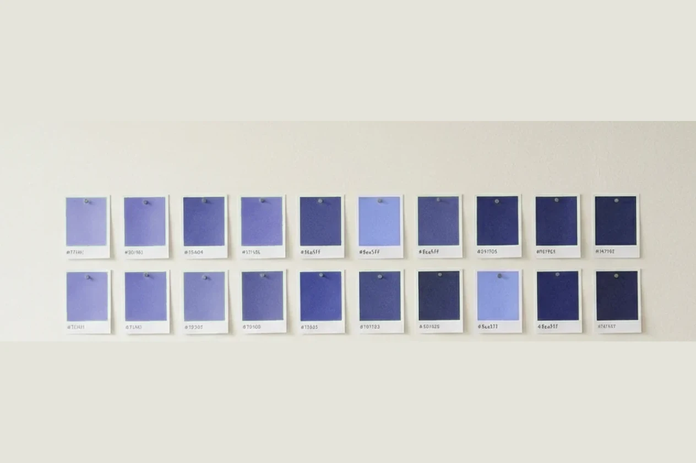
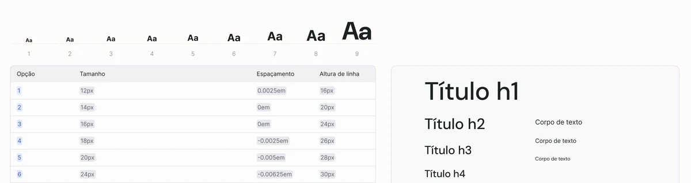
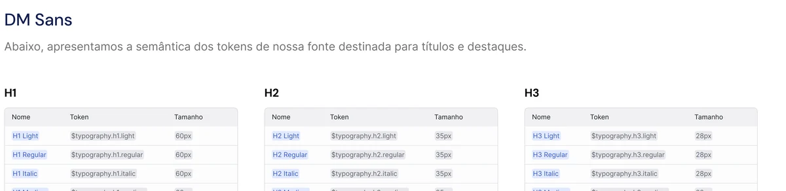
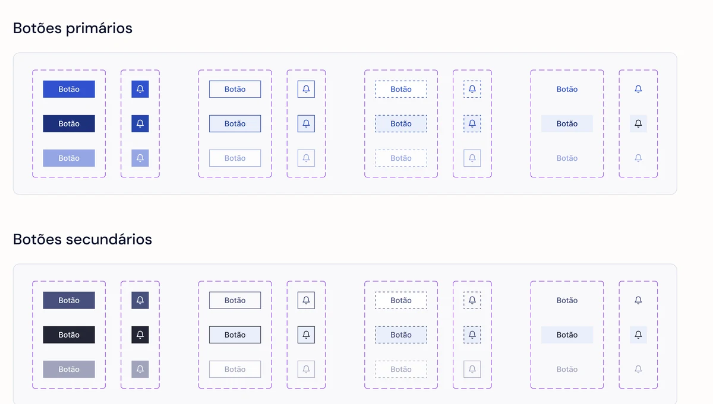
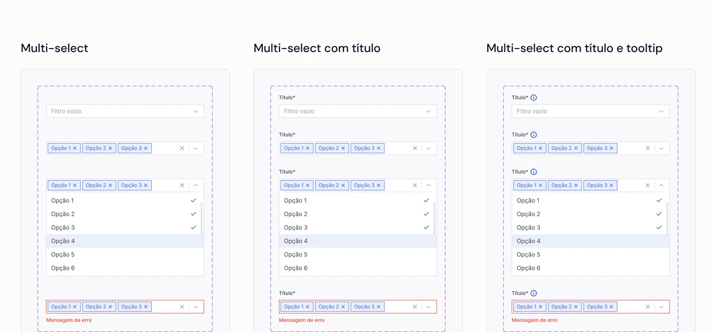

- Problem
- Every screen started from an empty frame, so the same component was redrawn with small differences nobody had decided on.
- What I did
- Built the system from scratch: an audit with real counts, a three-layer semantic token scale where only the middle layer is allowed in design files, then migration and governance rules.
- Outcome
- Maintenance and prototyping agility up 40%, measured in the Jira the engineering team already used.
Compass is the design system I built from scratch at Kruzer, the platform behind Fast Shop's fulfillment operation. It started as a way to stop rebuilding the same status pill for the third time, and ended up as the layer that let three products stay coherent while the platform scaled to 80+ stores.
01 · The painBefore: everything took longer than it should
There was no shared foundation. Every new screen started from an empty frame, so the same components were redrawn over and over with small differences nobody had decided on. A status pill was one shade of green in the queue and another in the order detail. Spacing was whatever felt right that afternoon.
The cost showed up in three places. Design took longer because nothing could be reused. Engineering took longer because every handoff described a slightly new component. And review cycles took longer because most of the comments were about inconsistencies, not about whether the solution was right.
Most of the review time was spent arguing about padding, not about whether the design solved the problem.
02 · The pointerThe pointer: how long it takes to ship a change
A design system is easy to justify badly. “Consistency” is not a business case, and no one funds tidiness. The pointer I argued for was delivery speed: how long a change takes to get from decision to production, across three products drawing on the same platform.
That framing matters because it can be proven wrong. If cycle time didn’t move, Compass was an expensive preference. Tying it to a number the engineering leads already tracked meant I was accountable to their measurement, not to my own.
“Consistency” is not a business case. Delivery speed is, and it can be proven wrong.
03 · The questionsWhat I had to agree with engineering before writing a single token
A design system that designers love and engineers route around is a failed design system. So the founding conversation was with the people who would consume it.
-
Who owns a component once it exists?
If nobody is accountable for a component after launch, it rots. We settled ownership before the library had anything in it, which is the only moment that conversation is cheap.
-
What does a handoff need to contain to stop being re-negotiated?
I asked engineers what they were actually missing when a spec arrived. The answers shaped the documentation more than any design-system article did.
-
What breaks if we rebrand, or add dark mode?
Asking the future question early is what forced the token layer to exist before the components. A system that can’t survive a colour change was never a system.
-
Who is allowed to say no?
Governance is not bureaucracy, it’s the answer to “can I just add one more variant?” Deciding who answers that, and on what grounds, is what keeps the library from drifting back into a folder.
Governance isn’t bureaucracy. It’s the answer to “can I just add one more variant?”

The user here is the team, and the job is confidence
Compass has no end user. Its users are designers and engineers, and what they are hiring it for is not beauty. It is the ability to make a decision once and not argue it again. A designer opening a file wants to know that the green in front of them is the right green because the system says so, not because someone eyeballed it in a hurry.
Framed that way, the measure of success stops being how many components exist and becomes how few decisions each screen requires.
The job isn’t consistency. It’s making a decision once and never having to defend it again.
05 · The betWhat I owned
I built Compass end to end and stayed responsible for it after launch: the audit, the token architecture, the component library, the documentation, and the governance rules that decide who can change what.
My role
Senior product designer, sole owner of Compass from the audit through governance: token architecture, component library, documentation, and the rules for changing any of it.
The team
Built with the engineering leads who would consume it, the product managers whose roadmaps it had to survive, and the designers on Pick & Pack, PIM and DevTools as its first users.
Compass is built in the order the layers depend on each other, not in the order they become visible. Primitives first: a nine-step type scale, a spacing scale, radii, colour. Atoms in the strict sense — values with no opinion about where they are used.

How I checked, when the evidence is delivery data
There is no usability test for a design system, and no funnel. The users are colleagues, the sample is the team, and the thing you want to know, whether this makes the work faster and more consistent, only shows up in how work actually flows.
So the evidence came from three places. The audit gave a hard before: how many greens, how many paddings, how many button heights were live in production, counted rather than estimated. Pick & Pack was the first consumer, which made the system prove itself against a real product before anyone else adopted it. And Jira, which the team was already using to track demand, gave the after: the same class of work, measured before and after adoption.
Using a system the team already maintained matters. A metric I invent to prove my own project is worth roughly nothing in a review; a metric engineering already trusts is much harder to wave away, and much harder for me to flatter.
A metric I invent to prove my own project is worth nothing in a review. One engineering already trusts is.
The round that fixed the token names
The users here are designers and engineers, so the test was a naming round. I put the token list in front of people who hadn’t built it and asked them to pick the right token for a handful of real situations, without explaining the layers first.
That a clear three-layer structure would be self-evident once it was documented properly.
People reached for the primitive layer anyway. Given green-500 and status-success side by side, the concrete name wins, because it is the one you can picture. Documentation does not beat that instinct.
So the fix wasn’t a better diagram, it was removing the choice: primitives stopped being published to design files at all. A rule beat an explanation, which is usually the right call when the wrong option is also the easier one.
The semantic token scale is the actual product
The mistake I have seen most often is naming tokens after what they look like. A token called green-500 tells you nothing about when to use it, so people guess, and the guessing is where inconsistency comes back in.
Compass separates three layers, and only the middle one is allowed in a design file. That single rule is what makes a rebrand a config change instead of a project.
-
Primitive
The raw values. green-500, space-4, radius-2. Nobody designs with these directly. They exist only to be referenced.
-
Semantic
What the value means. status-success, surface-raised, spacing-inset-md. This is the only layer a designer or an engineer touches, because it carries intent instead of appearance.
-
Component
Where a component overrides the semantic default for a real reason. Rare on purpose: if this layer grows, the semantic layer is wrong and needs fixing rather than patching.
The payoff is boring and enormous. Changing the meaning of "success" across three products is one edit. Adding a density mode is a token set, not a redesign. And a new designer can read a file and understand why a colour is there.
A live slice of Compass. Every component here reads from the same three tokens, so changing one keeps the whole set coherent. That is the entire argument for a design system, in about four seconds.

$typography.h1.medium carries intent; 60px carries appearance. A designer who reaches for the second one is guessing, and the guessing is where inconsistency comes back in.A library without governance is just a folder
The part teams skip is the part that decides whether the system is alive in a year. Compass shipped with rules, not just files: a new component has to prove it appears in at least two products, a change to a semantic token goes through review because it moves everything downstream, and anything marked deprecated has a removal date rather than sitting there forever.
I also treated documentation as part of the component. A component without a written "use this when" is a component that will be misused, and every misuse becomes an inconsistency someone else has to clean up later.
Componentisation is where the rules stop being a document and start being enforced. A button is one component with variants for hierarchy, size, state and icon, laid out with auto layout so spacing comes from the token and cannot be nudged by hand. An engineer opening it receives a rule, not a rectangle.

Migration is where a design system is actually tested
A library that has never survived a real product is a mood board. Pick & Pack was migrated screen by screen while it was still being built, which meant every gap in the system showed up under deadline pressure. That is the honest condition, not a workshop.
Some components didn’t survive contact. Others revealed that the semantic layer was missing a meaning rather than a value. That is the failure worth catching. A component override is a patch; a missing semantic token is a flaw in the system itself. I sat in engineering’s implementation reviews through the migration, because a token that exists in Figma and not in code is a token that doesn’t exist.
A token that exists in Figma and not in code is a token that doesn’t exist.
Migration is also where the atom-and-molecule distinction stops being vocabulary. A select is not one component; it is a field, a label, a tooltip, a chip, a list and an error state composed together. Getting the composition right is what made a new select variant cost minutes instead of an afternoon, and it is the difference between a library and a folder of screens.

What it changed
The clearest signal came from the tracker rather than from opinion. Once teams were building from Compass instead of from scratch, the throughput of design demands in Jira rose sharply, and the nature of review comments changed: less about spacing and colour, more about whether the flow was right.
What that number cannot prove, and I would say so before anyone asked: ticket throughput is a confounded metric. The team also grew, the sprint cadence changed once, and cards were not all the same size. The 40% is the delta the engineering leads read from their own board over the same class of work, which makes it the best number available here — not a controlled one. The review-comment shift is the softer signal, and honestly the one I trust more, because nobody can game what a colleague chooses to argue about.
How it was measured: the 40% figure comes from Jira demand-tracking metrics, comparing the throughput and cycle time of design tickets before and after teams adopted Compass. It is a tracker measure of delivery, not a controlled experiment, and I would present it that way.
How it was measured
The measurement had to belong to someone other than me, or it would have been marketing.
- Headline Maintenance and prototyping agility, up 40%, read from the Jira board engineering already used to track demand.
- The before The audit: the counted number of greens, paddings and button heights live in production, so the baseline was a fact rather than a feeling.
- Qualitative What review comments were about. Less spacing and colour, more whether the flow was right. That is the change the number stands for.
The argument I had to win
A design system is adopted by people who did not ask for it, so the argument was never with design. It was with engineering, and it was about taking something away: only the semantic layer would be published, which meant giving up a naming convention they were already comfortable with. What made that land was the audit. Sixty near-identical greens live in production is not an opinion, and it moved the conversation from taste to cost in one meeting.
What I’d do differently
I would write the governance rules before the component library, not after it. Adoption was faster than I expected, which sounds like good news and meant the rules arrived while people were already adding variants — so the first months of governance were spent undoing things instead of preventing them. I would also have measured something other than throughput. Cycle time on the same class of ticket would have been a harder number to argue with, and I only realised that once the 40% was already the headline.
The instrument was chosen, not inherited
Four projects, four instruments. A weekly behaviour curve on the family app, every therapist on the clinical team for LIAM, a staged store rollout on Pick & Pack, and here a delivery metric the engineering team already owned. None of those methods would survive being moved to another one of these projects.
That is the actual method, and the only part I’d claim transfers. Read the context first. Then pick the cheapest evidence in that context that could still prove me wrong, and don’t ship until it has spoken. The technique changes every time. Refusing to decide alone doesn’t.
The technique changes every time. Refusing to decide alone doesn’t.
What I'd defend in a design review
The decision I would defend hardest is refusing to let the component layer grow. Every time someone needed a one-off override, it was a signal that the semantic layer had a gap. Fixing the gap is slower in the moment and cheaper for everyone after.
The third is that I count governance as part of the deliverable. A system nobody owns drifts back to where it started, and then the next designer gets to rebuild it and claim the same 40%.